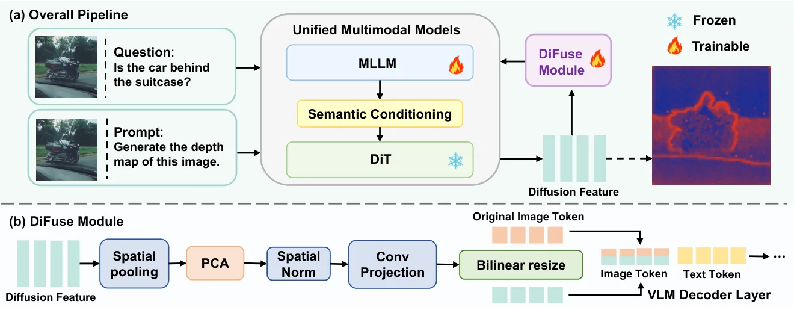
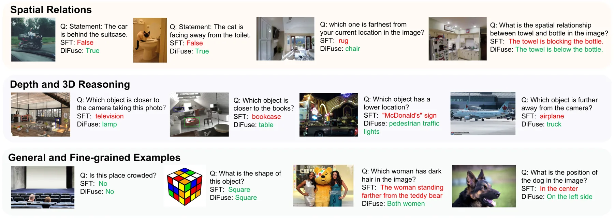
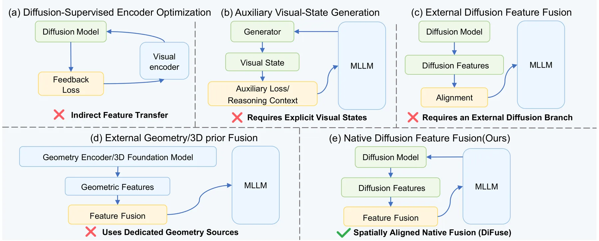
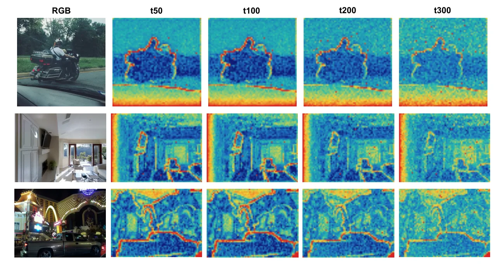
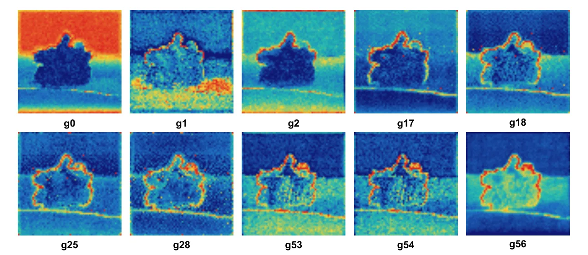

DiFuse：复用统一多模态模型原生扩散分支的中间表征来做空间推理
DiFuse: Fusing Native Diffusion Representations for Spatial Reasoning in Unified Multimodal Models
把 UMM 自己扩散分支第 g18 层、第 100 步去噪的中间特征做 PCA 压缩与卷积适配，对齐到视觉 token 网格后残差注入解码器前 8 层；UniWorld-V1 上空间均分 +1.80（相对匹配 SFT 基线），通用均分基本持平，但随机特征对照说明约一半增益来自“多一条残差通路”本身。
Avg-S gain over matched SFT
gain over random-feature control
general average
source layer and timestep
作者、单位与技术谱系 · Research context
作者与单位
研究脉络
- UniWorld-V1（Lin et al., 2025）方法基座关系：本篇实验与消融全部建立在 UniWorld-V1 的“理解分支 + 原生 DiT 生成分支”混合架构上，默认配置（g18 层、t=100、注入 0–7 层、λ=1）都是在该基座上筛出来的。[论文 §3.1 / §4.1]
- Stable Flow 的 vital-layer 分析（Avrahami et al., 2025）方法上游关系：源层筛选沿用其 bypass 思路：删掉某层若显著改变生成内容，则该层被视为“vital layer”，据此把候选缩到 g17/g18/g28/g53 再统一比较。[论文 §3.2 / §4.3 Table 3]
- GenHancer / DIVA / DEEM / RecA 等生成辅助理解方法方法上游关系：这条线通过扩散反馈、重建目标或中间生成过程把生成知识传给理解；DiFuse 的推进是跳过这些额外优化目标，直接复用同一模型原生分支的中间层。[论文 §2.2]
合作网络
- CASIA 单团队署名中国科学院自动化研究所 → DiFuse 五位作者关系：共同署名[论文首页署名]
- UniWorld-V1 与 OmniGen2 双基座依赖DiFuse → UniWorld-V1 / OmniGen2关系：技术依赖（冻结基座）[论文 §4.1 Table 1]
- Stable Flow → DiFuse 源层选择Stable Flow（Avrahami et al., 2025） → DiFuse 的 g18 选择关系：方法依赖[论文 §3.2 / §4.3]
作者单位、基座与技术依赖均来自论文正文与参考条目；论文未公开个人主页，因此没有登记导师/师生关系。
方法本质拆解 · What actually changed
是不是微调？
不是全量微调。扩散分支、视觉编码器与原始 UMM 参数全部冻结，只训练解码器上的 LoRA 与每个注入层的适配器，训练 3 个 epoch。数据是 LLaVA-1.5 混合里去掉 GQA 后的 296,401 条图文指令，与匹配 SFT 基线完全一致，因此两者只差“有没有扩散特征通路”。
有没有额外约束？
没有新增损失。目标仍是标准自回归 SFT；约束体现在结构上——只对视觉 token 位置加残差，文本 token 完全不动，并且用双线性插值把扩散特征图对齐到视觉 token 网格，靠 raster order 保持逐位置对应。融合系数 λ 是固定标量而非学习门控。
推理/后端到底做了什么？
推理时不需要跑完整去噪，只在固定 timestep 取一层中间特征；由于特征与图像一一对应，可以离线缓存，运行时只是多一次查表加残差。没有全局优化、没有测试时迭代，也没有额外的解码或后处理步骤。
方法本质是什么？
本质是“把生成分支在固定噪声水平上的空间张量，当作视觉 token 的逐位置结构先验，用零初始化残差并入早期跨模态融合层”。它改变的是视觉 token 在解码器前段的表示，让布局/边界信息参与后续注意力；没有改变的是文本通路、视觉编码器与训练目标。
输入（图像 + 问题 + 固定生成提示）→ 在冻结 DiT 的 g18/第 100 步取空间特征并 PCA 压缩 → 适配器投影后按 token 位置残差注入解码器 0–7 层 → 视觉 token 获得结构先验，空间问答提升而通用能力基本不变。

桥接价值Bridge
桥接价值
语义视觉编码器优化的是高层识别的不变性，对局部布局、遮挡边界这类结构信息不敏感；扩散 Transformer 为了重建图像，反而必须保留布局与边界。DiFuse 的价值在于把这条“结构信息”通道建立在模型内部，不需要外挂几何编码器或额外标注。对我们的路线来说，这正是“底层几何 → 空间推理”接口的一种低成本实现：把冻结模型中间层的空间张量当作几何先验 token，而不是把几何当成另一个独立模块。它同时也提供了一个反面提醒——如果不做 shuffle 对照，很容易把“多一条通路”的容量增益误读成“几何先验起了作用”。
方法与模块Method
方法摘要
基座是 UniWorld-V1（理解侧 Qwen2.5-VL-7B，生成侧原生 DiT）。给定图像，生成分支用固定提示“Generate the depth map of this image”沿原生去噪轨迹跑到第 100 步，取第 g18 层的空间 token（保留顺序，不解码图像）。特征先做空间下采样与固定 PCA 压到 d_D 维并离线缓存，每个注入层配一个独立适配器：逐通道空间归一化 → 3×3 卷积 → GELU → 1×1 卷积，输出投影零初始化，因此训练开始时该通路等价于恒等映射。
可迁移模块
第一个可迁移点是“离线缓存 + 零初始化残差 + 固定 λ”的组合：不学习门控，增益只能来自特征本身，便于归因。第二个是三组扰动对照（换图、换 token 顺序、换随机特征），可以直接用来检验我们自己的几何先验是否真的被下游用上，而不是被当成正则。第三个是源层筛选流程（先用 vital-layer 的 bypass 分析缩小候选，再在小配置下统一比较），比“逐层全扫”省算力，适合我们在 VGGT/MASt3R 类模型上复用。

证据Evidence
关键证据与数字
Table 1（UniWorld-V1，相同 SFT 数据与优化设置）：Avg-S 从 SFT 的 71.88 提升到 73.68（+1.80），其中 VSR 87.81→89.36、CVB-3D 81.92→84.58（+2.66）、3DSR-C 46.79→48.38；同时 Avg-G 71.94 vs SFT 71.51，通用能力没有被牺牲。Table 5 的对应性对照给出了更关键的分解：对齐特征 73.68、随机特征 72.80、换图 72.60、换 token 顺序 71.84，说明“图像内容”贡献约 1.08、“正确空间对应”再贡献约 0.88，而额外残差通路本身已占约 0.9。Table 1 的 OmniGen2（Qwen2.5-VL-3B 基座）上 Avg-S 65.37→65.84（+0.47），但 Avg-G 67.69→67.02（−0.67）。
边界与下一步Limits & Next Step
边界与风险
增益幅度必须按“随机特征已到 72.80”来读：空间对齐真正带来的净收益只有约 0.88 个点，而不是表面的 +1.80。跨架构证据偏弱——OmniGen2 上空间只涨 0.47 且通用能力掉 0.67，作者也没有给出该基座重新选层/选 λ 的完整扫描。对比表里 VST-SFT 的 Avg-S 达 77.17（但 Avg-G 70.95），说明“专门做空间增强”的方法上限更高；DiFuse 的定位是“不引入外部几何源”的低成本增量，不能读成空间推理 SOTA。此外全文没有任何深度、位姿或 3D 一致性下游指标，结构信息是否真的被保留仍属推断。
下一步实验
第一步做替换实验：把 DiT 中间层换成冻结的几何基础模型（VGGT/MASt3R/DepthAnything 类）中间层，在同样数据与同样注入位置下比较 Avg-S，看“结构先验来自生成分支”是否是必要条件。第二步把 +1.80 按“额外通路 / 空间对齐 / 内容相关”三段拆分复现，确认随机特征基线的可比性。第三步把该通路接到我们自己的评测上：除了 VSR/3DSR 这类问答指标，再加相对深度误差与跨视角一致性，检验它是否改善几何而不只是答题。







